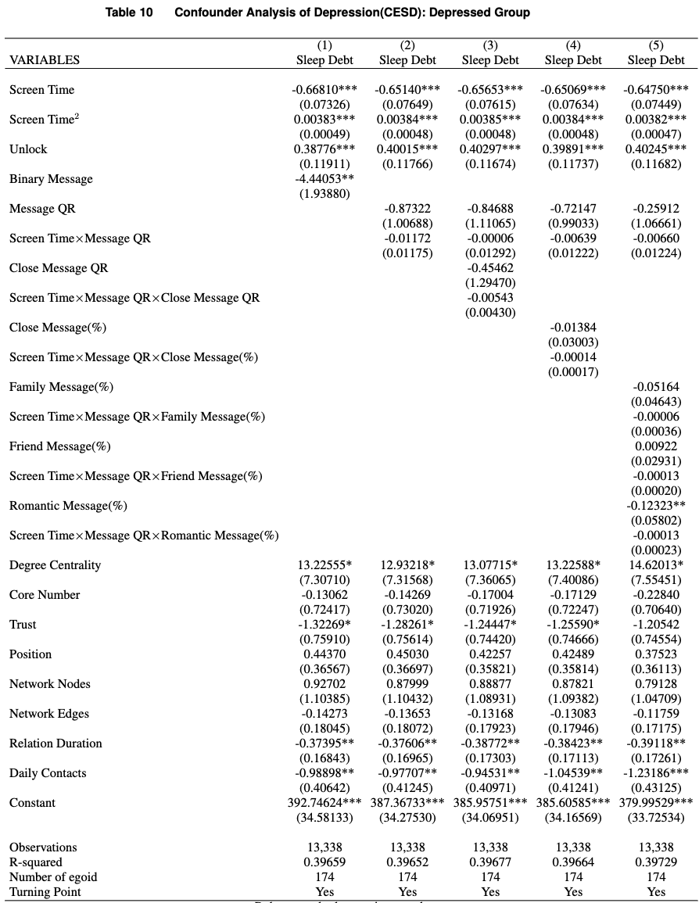

In this update, we try to identify the confounding factors for the three major independent variables: screen time, unlock frequency and message.
1 Confounders
Busynesin the evening. For example, when a student has to prepare for an exam the next day, he/she may need to focus on studying and reduce smartphone use the night before the exam. In the meantime, the student’s sleep debt may increase as he/she spends more time studying on that day.
Busyness of the next day. The schedule of the next day may impact students’ smartphone use and sleep debt of the previous day. For instance, when students know they have an early class the next day, they may consciously reduce smartphone use and sleep earlier.
Social activities at night. Social activities, including parties and dating, may impact both smartphone use and sleep debt. When students have parties scheduled at night, instead of using smartphones, they may spend more time on social activities. Their sleep debt may increase correspondingly due to the
Tiredness of the day. One may reduce smartphone use and sleep earlier and more when he/she feels very tired on that day.
Health status of the day. When an individual is sick, she/he may have to reduce smartphone use and spend more time on sleep.
Accident or emergency. When an individual meets unexpected emergent events, she/he may have to reduce smartphone use. In the meantime, his/her sleep may be deprived.
Travelling/Flight. Traveling may impact both smartphone use and sleep debt negatively. When an individual is on a flight, his/her access to a smartphone is limited. Also, the individual’s sleep may be disturbed due to the turbulence during flight.
Change of lifestyle. When one realizes the harm of smartphone overuse and the importance of healthy sleep, he/she may decide to regulate his/her lifestyle, resulting in less screen time and sleep debt.
Computer games. Playing computer games may have impacts on both smartphone use and sleep debt. For example, a student who is addicted to computer games may spend less time on a smartphone and sleep.
Fitness at night. Some individuals have the habit of working out in the evening or at night. This lifestyle may reduce screen time before sleep and extend sleep duration, as tiredness may help individuals fall asleep earlier.
Insomnia. Having insomnia issues may impact both smartphone use and sleep. Individuals may have difficulties in falling asleep when they have insomnia issues. Staying awake may leave individuals time to use their smartphones.
Entertainment at night. Having entertainment activities at night may impact both smartphone use and sleep debt. For example, one may watch TV and stay up late, resulting in less smartphone use and more sleep debt.
Caffeine and Alcohol Consumption. These substances can affect sleep quality and are related to lifestyle choices that may correlate with smartphone use habits. For example, drinking alcohol may help individuals fall asleep faster and use less smartphone.
Stress Levels. Overall stress levels can impact both sleep quality and the amount/type of smartphone usage. For instance, when an individual is stressed out due to academic tasks, it may be harder for him/her to fall asleep. In the meantime, the individual may use a smartphone to kill time.
Socioeconomic Status. This can influence access to smartphones, as well as sleep environments and overall health. For example, students who face financial issues may need to do part-time jobs, which sometimes happens at night (e.g., waiters). This may reduce their smartphone use at night and increase sleep debt.
Marital Status. Being married or having a partner may influence sleep patterns due to shared sleeping environments and responsibilities that might affect smartphone use before bed.
Children in Household. The presence of children, especially young ones, can significantly affect sleep patterns and opportunities for smartphone use.
Roommate. Having roommates may impact individuals’ smartphone use and sleep cycle. For example, an individual living with roommates may spend more time face-to-face chatting than on a smartphone screen. Moreover, interacting with roommates may impact sleep duration.
2 Category of Confounders
2.1 Busyness
Weekends
Weekdays
In Semesters
In Breaks
2.2 Reverse Causality/Insomnia/Roommates/Children
To test the potential impact of insomnia on the relationship between smartphone use and sleep debt, we look at the students’ insomnia level. In the first five waves of socil surveys, students took the Pittsburgh Sleep Quality Index (PSQI) test to measure their insomnia level. For the specific questions of the survey,please refer to the questionnaireof PSQI in this link and its references. The PSQI test consists of 19 self-rated questions that generate seven component scores: subjective sleep quality, sleep latency, sleep duration, habitual sleep efficiency, sleep disturbances, use of sleeping medication, and daytime dysfunction. The sum of these seven component scores yields one global score. The global score ranges from 0 to 21, with higher scores indicating worse sleep quality. The PSQI test has been widely used in the literature to measure sleep quality and insomnia level. The following figure shows the distribution of individuals’ average PSQI scores of based on the surveys they took.
Based on PSQI score, a binary PSQIGroup is created to indicate an individual’s overall sleep quality. When PSQI is <= 5, the student is labeled as ‘Good Sleep’, otherwise, the student is labeled as ‘Disturbed Sleep’. To test the consistency between Fitbit measured sleep quality and self-reported sleep quality, we compare the sleep debt between the two distinct PSQIGroup groups:
The above figure shows that ‘Disturbed Sleep’ group has a 10-minute higher sleep debt than “Good Sleep” group.
2.2.1 Descriptive Results with Total Observations
To evaluate whether our main results are influenced by the potential confounder “Insomnia”, we conduct the estimation separately for “Good Sleep” and ‘Disturbed Sleep’ groups. First, we recall the main descriptive results with total observations:

2.2.2 Descriptive Results by PSQIGroup
Next, we turn to the separate estimations grouped by PSQI level.
The blue lines in the figures show the sleep debt and orange lines show the message frequency. Lines with circle refer to the ‘Disturbed Sleep’ group. Lines with square refers to the ‘Good Sleep’ group. The results suggest that our main estimation results persist in both “Good Sleep” and ‘Disturbed Sleep’ groups.
2.2.3 Estimation by Insomnia Level
To validate the descriptive results above, we run the estimation separately for “Good Sleep” and ‘Disturbed Sleep’ groups.
2.2.3.1 Good Sleep Group
2.2.3.2 Disturbed Sleep Group
The estimation results for “Good Sleep” group and “Disturbed Sleep” group are consistent with our main estimation results with full observations. The turning points of the “Disturbed Sleep” group are located slightly lefter (81.92 minutes < 83.33 minutes)than those of the “Good Sleep” group, suggesting that sleep debt of “Disturbed Sleep” group increases earlier than the “Disturbed Sleep” group with the increase of screen time.
2.2.4 Predicted Sleep Debt
The above figure show the predicted sleep debt for “Good Sleep” group and “Disturbed Sleep” group. We observe that the predicted sleep debt of “Good Sleep” is lower than the “Disturbed Sleep” group. Both of them show a U-shape relationship between sleep debt and screen time. Overall, we observe that our main findings are not significantly influenced by insomnia.
2.3 Depression(CES-D)
Depression might be a confounder for the relation between smartphone use and sleep debt. Evidence suggest that around 75% depressed patients have difficulties falling asleep to some degree(Nutt, Wilson, and Paterson 2008). In this section, we examine whether our main results are influenced by individuals’ depression level. Fortunately, students took standardized depression surveys named Center for Epidemiologic Studies Depression Scale (CES-D) in the study, which is a screening test for depression and depressive disorder. CES-D measures depress symptoms defined by the American Psychiatric Association’ Diagnostic and Statistical Manual (DSM-V), this website shows the detail of the scale. The higher the CES-D score, the higher the depression level an individual has. Total Score of 16 or higher is considered depressed, otherwise, it is not depressed. The following figure shows the distribution of participants’ CES-D scores.
CES-D depression scale covered survey 1, 2, 4, 6 and 8. We check whether sleep debt differ between the depressed group and non-depressed group:
The above figure shows that “Not Depressed” group has an average sleep debt of 49.69 minutes, which is 3.5 minutes lower than that of “Depressed” group.
2.3.1 Descriptive Results by Depression Group
The above figure shows how sleep debt change over screen time for individuals with different depress levels. We observe that depressed individuals have an overall higher sleep debt and lower message frequency.
2.3.2 Estimation by Depression Level
Not Depressed Group
Depressed Group

2.4 Depression (BDI)
Beck Depression Inventory （BDI) is another standerdized survey for measuring depression level. The BDI survey was conducted in the second, third, fifth and seventh wave of the study. The BDI survey consists of 21 questions, each with four possible responses ranging from 0 to 3. The total score of the BDI survey ranges from 0 to 63, with higher scores indicating higher depression levels. The following figure shows the distribution of participants’ BDI scores. Please refer to the link for the detailed questionnaires.
The above figure shows the depression levels based on BDI index. [0-13] belongs to minimal depression category, [14-19] refers to mid depression level, [20-28] refers to moderate depression level and [29-63] refers to severe depression level.
We combine mild, moderate and severe categories as depressed group and take minimal level category as non-depressed group. The above figure shows that the depressed group has a higher sleep debt.
2.4.1 Descriptive Results by Depression Group
The above figure shows that descriptive trend of sleep debt varying over screen time. It suggests that dethe pressed group has a overall higher sleep debt than the non-depressed group.
2.4.2 Predicted Sleep Debt

The above figure show the predicted sleep debt based on two-way fixed effect mdel. The figure shows that depressed group has an overall l higher sleep debt. Woe observe that the Ushape the relationship persists.
2.4.3 Estimation by Depression Level
Not Depresssed Group
Depressed Group
The estimation results show that the impact of screen time are consistent in not depressed group and depressed group. However, we observe that the impact of message is not significant for depressed group not matter depression is measured by the CESD or BDI.
2.5 Children at Residential
2.6 Socioeconomic Status
Socioeconomic status could be a confounder for the relationship between smartphone use and sleep debt. For example, students in low-income family may need to do part-time jobs to pay for their student loan debt. In this section, we examine whether our main results are influenced by individuals’ socioeconomic status. Specifically, we use parents’ income level to measure socioeconomic status. The following figure shows the sleep debt varying over participants’ parents’ income level.
We observe that students with parents’ income greater than $250K has 38.66 minutes sleep debt, which is much higher than other categories. While students whose parents’ income are lower than $50K have sleep debts of 53.24 and 66.37 minutes, which are higher than the average. We merge the categories with income less than $50K as low income group, categories with income between $50K~$250K as medium income, and take category with income higher than $250K as high income. The following figure shows sleep debt with three groups:
Next, we show how sleep debt vary with screen time differentiated by parents’ income level:
We observe that students with low income have a significantly higher sleep debt when screen time is between 10-20 minutes. We speculate that those students may have part-time jobs to do at night, which limit their phone use time and sleep duration. We also observe that students with high household income have a higher message level, indicating that they may spend more time on networking.
2.6.1 Predicted Sleep Debt
2.6.2 Estimation by Household Income Level
2.6.2.1 High Income
2.6.2.2 Medium Income
2.6.2.3 Low Income
2.7 Fitbit Work Status During night shift
Whether Fitbit works during night shift could be a confounder for the relationship between smartphone use and sleep debt. In this section, we examine whether our main results are influenced by individuals’ Fitbit work status during night shift. In the survey, participants were asked whether they wear Fitbit during night shift. The following figure shows the sleep debt varying over participants’ Fitbit work status during night shift: Does Fitbit work a night shift? The following figure shows the sleep debt varying over participants’ Fitbit work status during night shift.
We observe that individuals whose Fitbit work during night shit has a average sleep debt of 55.7 minutes, which is about 5 minutes higher than those whose Fitbit did not work during night shift.
2.7.1 Estimation by Fitbit Status During Night Shift
2.7.1.1 Not work
2.7.1.2 Work
2.8 Part-time Job
Students do part-time job from time to time to pay for their student loan debt or release financial pressure. In the survey, students are asked the following question:
Doing part-time could be a confounder for the causal inference between screen time and sleep debt as doing part-time jobs at night could limit individuals’ time spent on screen and sleep.
To address the selection issue of part-time job, we first investigate the relationship between sleep debt and the weekly part-time hours.
We observe that sleep debt increases slightly with the weekly work hours. We then create a dummy variable to further check the results:
We find that students with part-time jobs have over 6.57 minutes higher sleep debt than students without part-time job. Net we explore how sleep debt vary with screen time for the two groups:
The above figure suggests that students with part-time jobs have higher sleep debt although both groups represent a U-shaped relationship.
2.8.1 Estimation by Part-Time Job
2.8.1.1 Without Part-Time Job
2.8.1.2 With Part-Time Job
The sub-group analysis shows that the estimation results are consistent with our earlier results.
2.8.2 Predicted Sleep Debt by Part-Time Job
The figure above shows that the predicted sleep debt of students without part-time job is significantly lower than that of students with part-time job.
3 Alternative Specification
We estimate sleep debt with alternative specification taking “contacts” as main independent variables.
The results with alternative specification are consistent with our main specification.
2.9 Social Network Control
2.9.1 Social Closeness
2.9.2 Duration Social Relationship
2.9.3 Centrality of Social Networks
2.9.4 Core Number of Social Networks
2.9.5 Trust
2.9.6 Social Network Nodes
2.9.7 Social Network Edges
2.9.8 Control for Social Network
2.9.9 Control for Social Network(without Structure Features)
2.9.10 Subgroup Analysis by Network Features
We observe that the group with a long-relationship social network group has less sleep debt than the group with a short-relationship social network, which supports our “social support” argument. I also conducted subgroup analysis based on the size, closeness, degree centrality, core number of the social network, however, their prediction curve do not support our “social support” argument. In addition, we can also find the difference between different groups reflected by the height of the predicted cure of sleep debt, it is not reflected in when the turning point appears (turning point at 80 minutes or 100 minutes).
Subgroup Analysis by Relationship Length of Social Network
Subgroup Analysis by the Size of Social Network
Subgroup Analysis by the Closeness of Social Network